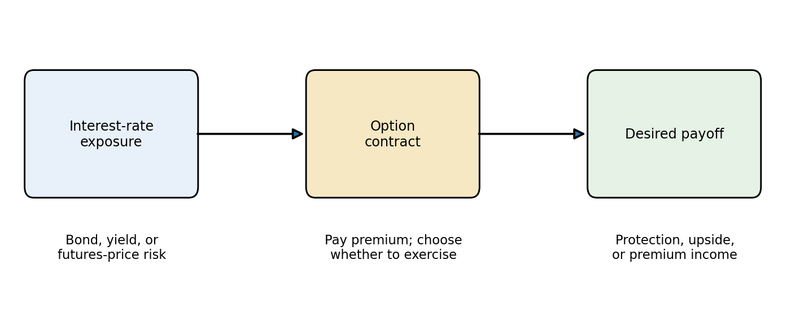
Lecture 11: Interest-Rate Options
Learning Objectives
After completing this lecture you should be able to:
- Define call and put options and identify the rights and obligations of buyers and sellers.
- Distinguish options from futures contracts in terms of obligation, upfront premium, and payoff symmetry.
- Describe exchange-traded options on Treasury and short-term interest-rate futures.
- Explain exercise, assignment, premium payment, and margin requirements for futures options.
- Calculate intrinsic value, time value, break-even prices, and profit for long and short calls and puts.
- Use put-call parity to identify equivalent positions and detect arbitrage inconsistencies.
- Explain how the underlying price, strike, time, interest rate, coupon, and volatility affect option value.
- Price a European option on a zero-coupon bond using a Black-Scholes-style model.
- Price an option with an arbitrage-free binomial tree.
- Define implied volatility and recover it numerically from an observed option price.
- Value European options on bond futures using Black’s model.
- Design a protective-put hedge for a long-term bond portfolio using puts on Treasury futures.
- Explain the income and risk trade-off in covered call writing with futures options.
1 The Big Picture: Insurance on Interest-Rate Exposure
An option gives its buyer the right, but not the obligation, to buy or sell an underlying instrument at a specified price. The buyer pays a premium for that choice. The seller receives the premium and accepts the corresponding obligation.
Interest-rate options transfer the risk of movements in bond prices, futures prices, or interest rates. They are useful because fixed-income investors often want an asymmetric payoff:
- protection if rates rise and bond prices fall;
- participation if rates fall and bond prices rise; or
- premium income in exchange for giving up some favorable outcomes.
TipCore Intuition
A futures contract locks in an outcome. An option buys a choice. The option premium is the price of keeping the favorable side while limiting or transferring the unfavorable side.
2 Option Definition
The Translation Students Must Make
Interest-rate options are easiest to understand if every problem is translated in three steps:
\[ \text{yield move}\longrightarrow\text{bond/futures price move} \longrightarrow\text{option payoff}. \]
For an ordinary fixed-rate bond, yields and prices move in opposite directions. Therefore, a call on a Treasury bond or Treasury futures contract usually benefits from falling yields, while a put usually benefits from rising yields. The option is written on a price, even when the manager’s concern is a yield.
| Market view or risk | Expected price move | Option position that benefits |
|---|---|---|
| Yields will fall | Bond/futures price rises | Long call |
| Yields will rise | Bond/futures price falls | Long put |
| Protect against rising yields | Insure against a price decline | Buy put |
| Protect against falling yields | Insure against a price increase | Buy call |
The first-order price approximation makes the link quantitative:
\[ \Delta P\approx-P\,D_{\text{mod}}\,\Delta y. \]
If a $10 million bond portfolio has modified duration 8, a 25 bp increase in yield produces an approximate loss of
\[ \Delta P\approx-\$10{,}000{,}000(8)(0.0025)=-\$200{,}000. \]
This is the loss a hedge must address. Choosing a put gives the hedge an asymmetric shape; the number of contracts must still be based on risk sensitivity.
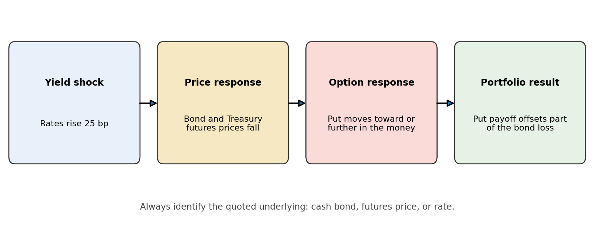
A call option gives the buyer the right to buy the underlying instrument at the strike price \(K\). A put option gives the buyer the right to sell the underlying at \(K\). The final date on which the right exists is the expiration date.
There are always two sides:
| Position | Right or obligation | Market view | Maximum loss at expiration |
|---|---|---|---|
| Long call | Right to buy | Underlying price will rise | Premium paid |
| Short call | Obligation to sell if assigned | Underlying will not rise much | Potentially very large |
| Long put | Right to sell | Underlying price will fall | Premium paid |
| Short put | Obligation to buy if assigned | Underlying will not fall much | Large if underlying collapses |
The buyer is long the option and pays the premium. The writer is short the option and receives the premium.
For an option on a Treasury futures contract, the underlying is the futures contract—not the cash Treasury security. Exercising a call creates a long futures position at the strike; exercising a put creates a short futures position at the strike.
Exercise Style
- An American-style option may be exercised on any eligible trading day through expiration.
- A European-style option may be exercised only at expiration.
The names describe exercise rules, not geography. Contract specifications determine the style. CME notes that Treasury and SOFR futures options are notable American-style products.
3 Options Versus Futures Contracts
An option and a futures contract can both change interest-rate exposure, but they create fundamentally different payoff shapes.
| Feature | Futures contract | Option contract |
|---|---|---|
| Economic commitment | Both sides are obligated | Buyer has a right; writer has an obligation |
| Upfront price | Normally no purchase price; margin is posted | Buyer pays premium under traditional premium style |
| Payoff | Symmetric | Asymmetric |
| Long’s downside | Falls one-for-one with futures price | Long option loss is limited to premium |
| Time value | No option time value | Premium normally includes time value |
| Main use | Lock in or linearly change exposure | Protect, retain upside, or sell contingent exposure |
Suppose a 10-year Treasury futures contract is at 110. A long futures position gains one point if the price rises to 111 and loses one point if it falls to 109. A call with strike 110 gains intrinsic value above 110, but the buyer can walk away if the futures price falls below 110. That flexibility is why the call costs a premium.
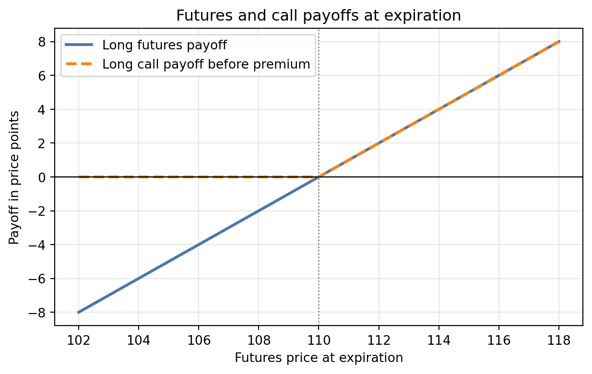
NoteExample 1: Locking Versus Insuring
A portfolio manager fears that Treasury prices will fall over the next three months.
- Selling futures locks in a linear short exposure. If prices fall, the futures gain; if prices rise, the futures lose.
- Buying puts costs a premium. If prices fall below the strike, the puts protect the portfolio; if prices rise, the manager can let the puts expire and retain most of the portfolio’s gain.
The futures hedge is cheaper upfront but removes both downside and upside. The put hedge preserves upside but charges an insurance premium.
4 Types of Interest-Rate Options
Interest-rate options can be classified by their underlying instrument.
Options on Cash Bonds
The holder has the right to buy or sell a bond at a stated strike. The bond’s coupon payments, maturity, yield, duration, and price volatility all affect the option. Over-the-counter bond options can be customized, but they introduce counterparty, liquidity, and documentation considerations.
Options on Interest Rates
Caps, floors, and swaptions are common over-the-counter instruments.
- An interest-rate cap protects a borrower against rates rising above a strike.
- An interest-rate floor protects an investor against rates falling below a strike.
- A swaption is an option to enter an interest-rate swap.
These instruments are often quoted using implied volatility rather than a dollar premium alone.
Exchange-Traded Futures Options
An option on futures gives the right to enter a specified futures contract at the strike price. Major U.S. interest-rate families include:
- options on 2-year, 3-year, 5-year, 10-year, Ultra 10-year, Treasury bond, and Ultra Treasury bond futures;
- options on Three-Month SOFR futures, including standard, weekly, and mid-curve expirations; and
- options on other listed short-rate futures where available.
Exchange trading brings standardized terms, transparent prices, centralized clearing, and the ability to close a position with an offsetting trade.
Mechanics of Trading Futures Options
The important contract terms are:
- the underlying futures contract;
- call or put;
- strike price;
- expiration month or date;
- exercise style;
- contract unit and price quotation; and
- premium and margin convention.
An order such as “buy one September 10-year Treasury futures 110 call” identifies a right to become long the specified September futures at 110, subject to the listed option’s exact expiration and exercise rules.
Exercising a Futures Option
When a futures call is exercised:
- the call holder receives a long futures position at the strike;
- the assigned call writer receives a short futures position at the strike.
When a futures put is exercised:
- the put holder receives a short futures position at the strike;
- the assigned put writer receives a long futures position at the strike.
The new futures positions are then subject to ordinary futures marking to market. Assignment to writers is handled through the clearing process. Traders often close an in-the-money option by selling it rather than exercising early because selling can preserve remaining time value.
Follow One Trade from Purchase to Expiration
Suppose a manager buys one December 10-year Treasury futures 110 put for 0-40. In the common option quotation, 0-40 means 40/64 of one price point:
\[ \text{premium}=\frac{40}{64}\times\$1{,}000=\$625. \]
The strike is 110, not $110. It is an index price equal to 110% of the contract’s $100,000 face unit. The table follows the position to expiration.
| December futures at expiration | Put status | Exercise payoff | Profit after $625 premium | What happens |
|---|---|---|---|---|
| 114 | Out of the money | $0 | -$625 | Let the put expire |
| 110 | At the money | $0 | -$625 | No economic reason to exercise |
| 109-24 (=109.375) | In the money by 40/64 | $625 | $0 | Break-even before fees |
| 107 | In the money by 3 points | $3,000 | $2,375 | Exercise or sell the valuable put |
If exercised at a futures price of 107, the holder receives a short futures position at 110. That short has an immediate economic gain of three points. Selling the option before expiration may be simpler; at expiration, exercise followed by an offsetting futures trade produces the same intrinsic value, apart from fees and execution differences.
TipReading Treasury Option Quotes
One point is $1,000 per $100,000 face-value contract. One 1/64 is $15.625. Thus a premium of 1-16 equals $1,250: one point ($1,000) plus 16/64 ($250). Keep price points, dollars, and yield basis points separate; they are not interchangeable.
NoteExample 2: Exercising a Treasury Futures Call
A trader owns one 110 call on a 10-year Treasury futures contract. The futures price is 112 at exercise.
Exercise creates a long futures position at 110. Its immediate economic value is:
\[ (112-110)\times \$1{,}000 = \$2{,}000, \]
because one full price point on a $100,000 Treasury futures contract is $1,000. If the call premium was 0-48, or 48/64 of a point, the premium cost was:
\[ \frac{48}{64}\times \$1{,}000=\$750. \]
Ignoring fees and the timing of cash flows, the net profit is $2,000-$750=$1,250.
Margin Requirements
Margin treatment depends on the exchange and contract convention.
- Under premium-paid-upfront or equity-style treatment, a long option buyer pays the premium. Because the long cannot lose more than the premium, the buyer normally does not post the same performance margin as an uncovered writer.
- An option writer has potentially large obligations and must post performance bond margin. Portfolio offsets and risk are reflected through the clearing margin system.
- Under futures-style margining, the premium is not fully exchanged at initiation; option value changes generate settlement variation, and the premium is settled when the position is closed, exercised, or expires.
Do not memorize a dollar margin amount. Exchanges and brokers update requirements as market volatility and portfolio risk change.
Reasons for the Popularity of Futures Options
Futures options are popular because they combine:
- asymmetric protection—the buyer’s loss is limited to the premium;
- liquidity in benchmark rate contracts;
- capital efficiency through clearing and portfolio margin offsets;
- price transparency from competitive exchange trading;
- flexibility across strikes and expirations; and
- easy implementation for portfolios already hedged with futures and DV01.
Specifications for Actively Traded Futures Options
The following table is a teaching summary, not a substitute for the current exchange rulebook.
| Option family | Underlying futures | Typical underlying unit | Quotation intuition | Exercise |
|---|---|---|---|---|
| Treasury note options | 2Y, 3Y, 5Y, 10Y, Ultra 10Y | $100,000 face | Points and fractions of a point | American style |
| Treasury bond options | T-Bond and Ultra T-Bond | $100,000 face | Points and fractions of a point | American style |
| Three-Month SOFR options | One specified SR3 futures contract | $1,000,000 reference notional | Index points; 1 bp in futures is $25 | American style |
Standard quarterly, serial, weekly, and mid-curve listings allow managers to target specific event dates or horizons. Product codes, strike intervals, trading hours, and expiration rules differ by family and can change. Always verify the live contract specification before trading.
5 Intrinsic Value and Time Value
The option premium has two parts:
\[ \text{Option premium}=\text{intrinsic value}+\text{time value}. \]
Intrinsic Value of an Option
Intrinsic value answers: If the option expired now, how much would exercise be worth? It can never be negative because the holder is not required to exercise.
Call Options
For an underlying price \(S\) and strike \(K\), call intrinsic value is:
\[ \max(S-K,0). \]
- \(S>K\): the call is in the money.
- \(S=K\): the call is at the money.
- \(S<K\): the call is out of the money.
Put Options
Put intrinsic value is:
\[ \max(K-S,0). \]
- \(S<K\): the put is in the money.
- \(S=K\): the put is at the money.
- \(S>K\): the put is out of the money.
Time Value of an Option
Time value is the premium above intrinsic value:
\[ \text{Time value}=\text{premium}-\text{intrinsic value}. \]
Time value reflects the possibility that the underlying will move favorably before expiration. It is usually greatest near the strike because uncertainty about whether the option will finish in the money matters most there. Time value tends toward zero as expiration approaches.
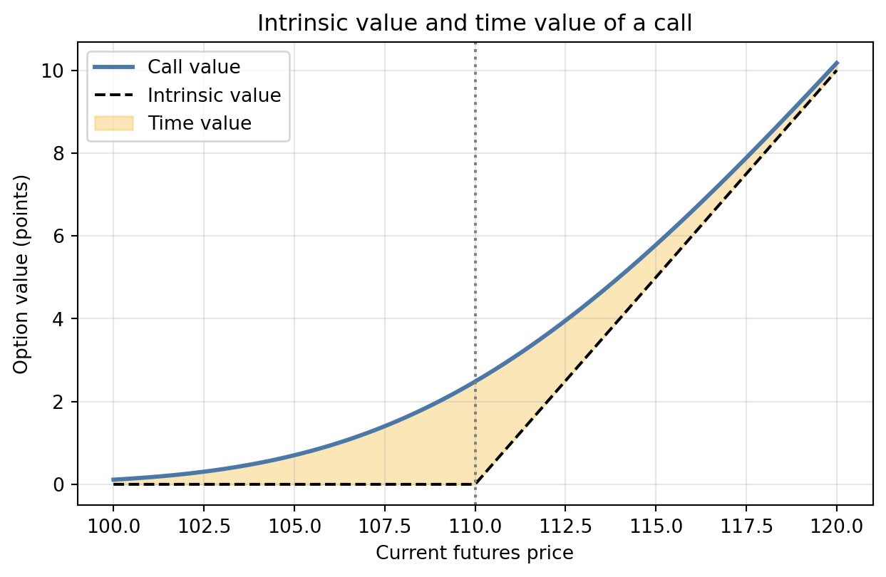
NoteExample 3: Decomposing a Premium
A Treasury futures call has strike 110. The futures price is 112 and the option premium is 2.75 points.
\[ \text{Intrinsic value}=\max(112-110,0)=2.00. \]
\[ \text{Time value}=2.75-2.00=0.75. \]
On a $100,000 contract, the $2.75 premium equals $2,750. Of this amount, $2,000 is intrinsic value and $750 is time value.
6 Profit and Loss for Simple Naked Option Strategies
The payoff ignores the initial premium. Profit includes it. Let \(c\) be the call premium, \(p\) the put premium, and \(S_T\) the underlying price at expiration.
Long Call Strategy
\[ \Pi_{\text{long call}}=\max(S_T-K,0)-c. \]
- Maximum loss: \(c\).
- Break-even price: \(K+c\).
- Maximum profit: theoretically unlimited for an ordinary asset price.
A long call is useful when the investor expects bond or futures prices to rise, which usually corresponds to a decline in yields.
Short Call Strategy
\[ \Pi_{\text{short call}}=c-\max(S_T-K,0). \]
- Maximum profit: \(c\).
- Break-even price: \(K+c\).
- Maximum loss: potentially very large.
An uncovered or naked short call earns a limited premium in exchange for taking large upside price risk.
Long Put Strategy
\[ \Pi_{\text{long put}}=\max(K-S_T,0)-p. \]
- Maximum loss: \(p\).
- Break-even price: \(K-p\).
- Maximum profit: approximately \(K-p\) if the underlying price could fall to zero.
A long Treasury futures put gains when futures prices fall, which usually happens when yields rise.
Short Put Strategy
\[ \Pi_{\text{short put}}=p-\max(K-S_T,0). \]
- Maximum profit: \(p\).
- Break-even price: \(K-p\).
- Maximum loss: large if the underlying falls sharply.
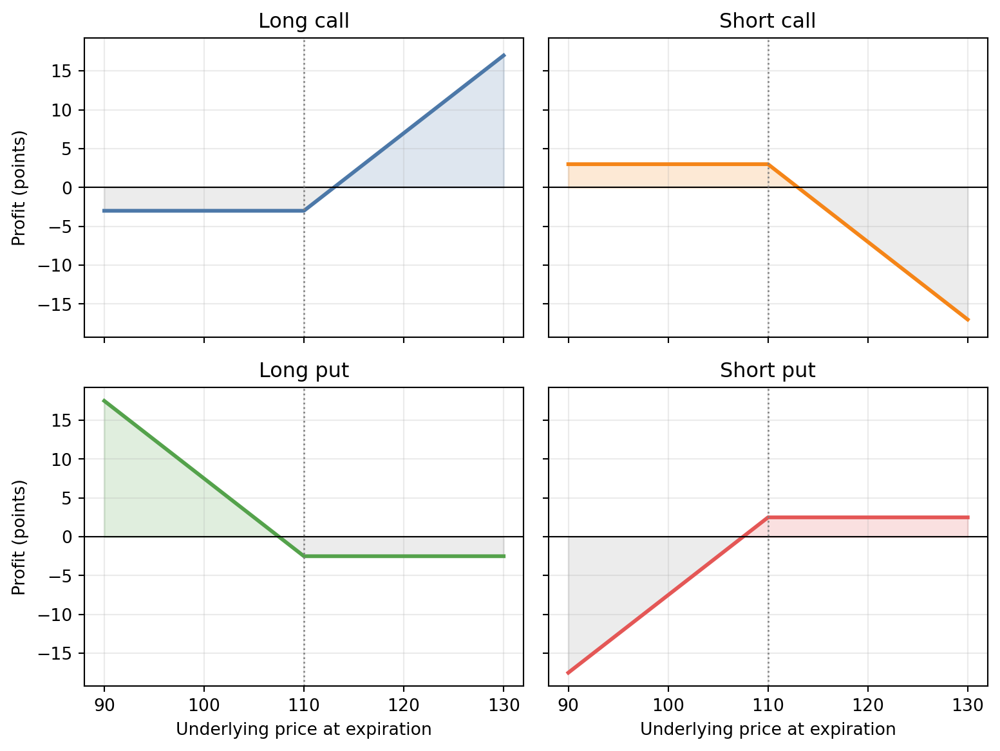
WarningNaked Option Writing
Receiving a premium is not the same as earning a safe return. A naked writer has a small, known maximum gain and a potentially much larger loss. Margin requirements help protect the clearing system; they do not eliminate the writer’s market risk.
NoteExample 4: Long Put Profit
A manager buys a 110 put for 1.50 points.
| Futures price at expiration | Put payoff | Profit after premium |
|---|---|---|
| 114 | 0.00 | -1.50 |
| 110 | 0.00 | -1.50 |
| 108.5 | 1.50 | 0.00 |
| 105 | 5.00 | 3.50 |
The break-even futures price is \(110-1.50=108.50\).
7 Put-Call Parity and Equivalent Positions
Put-call parity is a no-arbitrage relationship. For European options on a non-coupon-paying asset:
\[ C-P=S_0-Ke^{-rT}. \]
Equivalently:
\[ C+Ke^{-rT}=P+S_0. \]
The left side is a fiduciary call: a call plus enough risk-free investment to pay the strike. The right side is a protective put: the asset plus a put. At expiration, both are worth \(\max(S_T,K)\), so they must have the same price today.
For a coupon bond, subtract the present value of coupons paid before option expiration:
\[ C-P=(B_0-I)-Ke^{-rT}, \]
where \(I\) is the present value of interim coupons.
For European options on futures with premium paid upfront, Black’s model implies:
\[ c-p=e^{-rT}(F_0-K). \]
Equivalent Positions
Rearranging parity creates useful synthetic positions:
| Desired position | Equivalent position |
|---|---|
| Long call | Long put + long underlying - risk-free bond paying \(K\) |
| Long put | Long call - long underlying + risk-free bond paying \(K\) |
| Long underlying | Long call - long put + risk-free bond paying \(K\) |
| Protective put | Fiduciary call |
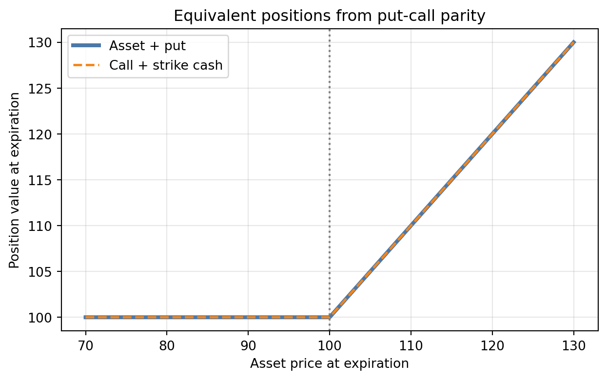
NoteExample 5: Parity and Arbitrage
Suppose \(S_0=98\), \(K=100\), \(T=0.5\), \(r=4\%\), and a European call costs $3.80. Parity says the put should cost:
\[ P=C-S_0+Ke^{-rT} =3.80-98+100e^{-0.04(0.5)} =3.82\text{ approximately}. \]
If an otherwise identical put traded at \(4.50\), the protective-put side would be too expensive relative to the fiduciary-call side. An arbitrageur would sell the expensive package and buy the cheap package, subject to transaction costs and shorting ability.
8 What Determines an Option Price?
An option’s value is shaped by six main inputs. The direction below describes a call option unless noted otherwise.
Current Price of the Underlying Instrument
A higher current bond or futures price makes a call more valuable and a put less valuable. The call gives the right to buy at a fixed strike, so the right becomes more attractive as the market price rises.
Strike Price
A higher strike makes a call less valuable and a put more valuable. Buying at a higher fixed price is less attractive; selling at a higher fixed price is more attractive.
Time to Expiration
More time usually increases American call and put values because it provides more opportunities for a favorable move. For European options, the effect can be more subtle because discounting and coupon timing also matter.
Short-Term Risk-Free Rate
For an ordinary call, a higher risk-free rate lowers the present value of paying the strike and tends to increase call value. It tends to reduce put value. For bond options, rate changes can simultaneously change the underlying bond price, so one must distinguish the pricing input effect from the market movement of the bond.
Coupon Rate on the Bond
Coupons paid before expiration reduce the value left in the bond on the exercise date. Holding everything else constant, larger interim coupons tend to reduce call value and increase put value. A simple model handles this by subtracting the present value of interim coupons from the current bond price.
Expected Volatility of Yields or Prices
More volatility increases both call and put values. The buyer keeps favorable outcomes but can decline unfavorable exercise. The option writer bears the other side. This convexity makes dispersion valuable even if the expected underlying price does not change.
For fixed-income options, be precise about what volatility means:
- price volatility measures percentage changes in the underlying price;
- yield volatility measures changes in yield, often in basis points; and
- normal versus lognormal volatility conventions produce different quote units.
Duration provides a first-order bridge:
\[ \frac{\Delta P}{P}\approx-D_{\text{mod}}\Delta y. \]
Longer-duration bonds translate a given yield shock into a larger price shock and therefore tend to have more valuable options, all else equal.
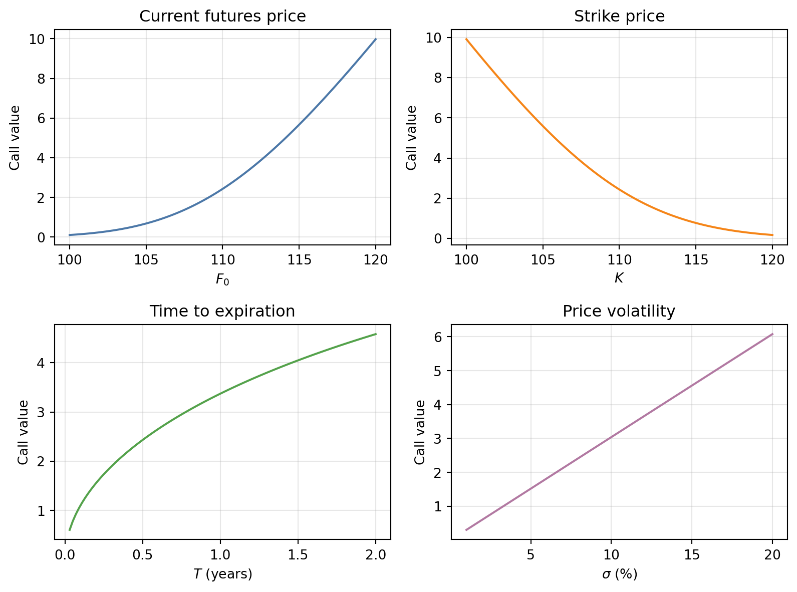
Moneyness, Time, and Volatility Together
Time and volatility matter most near the strike. A deep in-the-money call behaves more like the underlying; a deep out-of-the-money call has little chance of exercise. Near the strike, modest changes in uncertainty can change the exercise probability substantially.
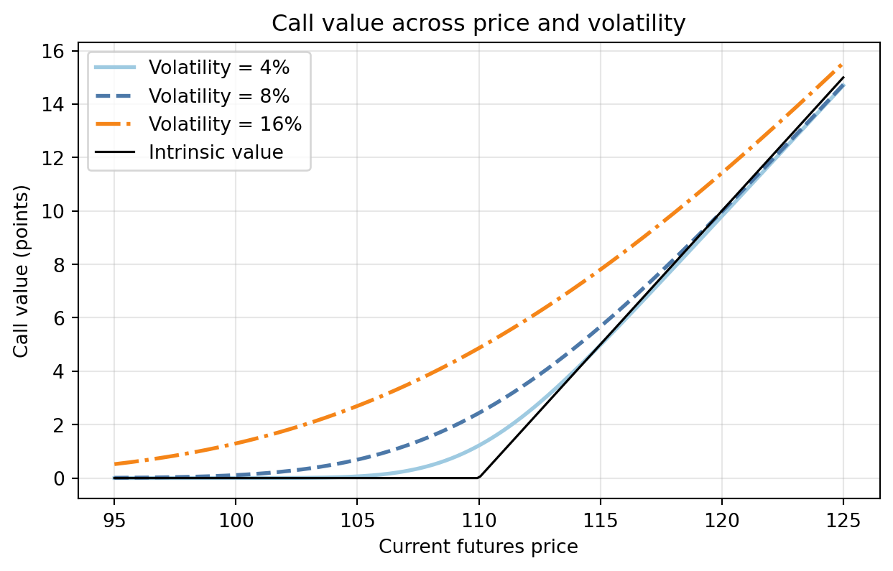
9 Models for Pricing Options
Every option model formalizes the same logic:
- describe possible future values of the underlying;
- determine the option payoff in each state;
- use no-arbitrage probabilities or a replicating portfolio; and
- discount the expected payoff at the appropriate risk-free rate.
Different models are useful for different underlyings and assumptions.
10 Models for Valuing Options on Bonds
Bond options are challenging because bond prices depend on interest rates, coupons, and maturity. Volatility is not naturally constant across time or maturity, and interest rates themselves can be negative.
Black-Scholes Option Pricing Model
For a non-dividend-paying asset, the Black-Scholes European call price is:
\[ C=S_0N(d_1)-Ke^{-rT}N(d_2), \]
where
\[ d_1=\frac{\ln(S_0/K)+(r+\sigma^2/2)T}{\sigma\sqrt{T}}, \qquad d_2=d_1-\sigma\sqrt{T}. \]
The put price is:
\[ P=Ke^{-rT}N(-d_2)-S_0N(-d_1). \]
For a coupon bond, replace \(S_0\) with \(S_0-I\), where \(I\) is the present value of coupons paid before option expiration.
The model assumes a lognormal underlying price, constant volatility, constant risk-free rate, frictionless trading, and continuous hedging. These assumptions are approximations for bonds. Modern rate-option desks generally use models designed for rates and term structures, but Black-Scholes remains valuable for intuition.
Computing a Call on a Zero-Coupon Bond
A zero-coupon bond pays no interim coupon, so the calculation is especially clean.
NoteExample 6: Call on a Zero-Coupon Bond
Consider a European call on a zero-coupon bond with:
- bond price \(S_0=92\);
- strike \(K=90\);
- option maturity \(T=0.5\) years;
- continuously compounded risk-free rate \(r=4\%\); and
- annualized bond-price volatility \(\sigma=10\%\).
We will calculate the call and put and then verify put-call parity.
Step 1: Calculate \(d_1\) and \(d_2\).
\[ d_1= \frac{\ln(92/90)+[0.04+(0.10)^2/2](0.5)}{0.10\sqrt{0.5}} =0.6290, \]
\[ d_2=0.6290-0.10\sqrt{0.5}=0.5583. \]
From the standard normal distribution,
\[ N(d_1)=N(0.6290)=0.7353, \qquad N(d_2)=N(0.5583)=0.7117. \]
Step 2: Calculate the call value.
\[ \begin{aligned} C &=S_0N(d_1)-Ke^{-rT}N(d_2)\\ &=92(0.7353)-90e^{-0.04(0.5)}(0.7117)\\ &=\boxed{4.8673}. \end{aligned} \]
The call is worth 4.8673 price units today. Its value exceeds its current intrinsic value of \(\max(92-90,0)=2\) because it also contains time value.
Step 3: Calculate the put value. Since \(N(-d)=1-N(d)\),
\[ N(-d_1)=0.2647, \qquad N(-d_2)=0.2883. \]
Therefore,
\[ \begin{aligned} P &=Ke^{-rT}N(-d_2)-S_0N(-d_1)\\ &=90e^{-0.04(0.5)}(0.2883)-92(0.2647)\\ &=\boxed{1.0852}. \end{aligned} \]
Step 4: Verify put-call parity.
\[ C-P=4.8673-1.0852=3.7821, \]
while
\[ S_0-Ke^{-rT}=92-90e^{-0.04(0.5)}=3.7821. \]
The two sides agree, as required by no arbitrage.
The option price is not the discounted expected payoff under the bond’s actual expected return. No-arbitrage valuation uses a risk-neutral distribution, so the asset’s expected return is replaced by the risk-free rate.
Coupon-Bond Adjustment
NoteExtension to Example 6: Coupon-Bond Adjustment
Suppose the bond in Example 6 pays a coupon of 2.00 before the option expires and its present value is 1.96. The adjusted underlying price is:
\[ S_0-I=92.00-1.96=90.04. \]
All else equal, this lowers the call value because the call holder does not receive the coupon paid before exercise.
Using the adjusted price in the same formula,
\[ d_1= \frac{\ln(90.04/90)+[0.04+(0.10)^2/2](0.5)}{0.10\sqrt{0.5}} =0.3245, \]
\[ d_2=0.3245-0.10\sqrt{0.5}=0.2538. \]
With \(N(d_1)=0.6272\) and \(N(d_2)=0.6002\),
\[ \begin{aligned} C_{\text{coupon bond}} &=90.04(0.6272)-90e^{-0.04(0.5)}(0.6002)\\ &=\boxed{3.5291}. \end{aligned} \]
Ignoring the coupon produced a value of 4.8673. Accounting for the coupon therefore reduces the call value by
\[ 4.8673-3.5291=\boxed{1.3382}. \]
The reduction is smaller than the coupon’s $1.96 present value because the call’s delta is below one: a one-unit reduction in the adjusted bond price does not reduce the option value one-for-one.
Arbitrage-Free Binomial Model
The binomial model divides time into steps. At each step, the underlying moves up by a factor \(u\) or down by a factor \(d\).
Choosing \(u\) and \(d\) to Match Volatility
In practice, \(u\) and \(d\) should not be chosen arbitrarily. In the standard Cox-Ross-Rubinstein (CRR) tree, divide the option’s life into \(N\) equal steps:
\[ \Delta t=\frac{T}{N}. \]
For annualized underlying-price volatility \(\sigma\), choose
\[ \boxed{u=e^{\sigma\sqrt{\Delta t}}}, \qquad \boxed{d=e^{-\sigma\sqrt{\Delta t}}=\frac{1}{u}}. \]
The one-step continuously compounded returns are therefore \(+\sigma\sqrt{\Delta t}\) and \(-\sigma\sqrt{\Delta t}\). Their separation grows with volatility and with the square root of time, matching the diffusion scaling assumed by Black-Scholes. As the number of steps increases, the CRR distribution converges to the corresponding lognormal distribution.
The expected growth rate is not inserted into \(u\) and \(d\). Instead, no arbitrage determines the risk-neutral up probability:
\[ q=\frac{e^{r\Delta t}-d}{u-d}. \]
The down probability is \(1-q\). A valid tree requires
\[ d<e^{r\Delta t}<u, \]
which ensures \(0<q<1\). If the underlying has a continuous income yield \(y\), replace \(r\) by the cost-of-carry rate \(r-y\) in the probability, not in the volatility-based definitions of \(u\) and \(d\).
NoteCRR Parameters for Example 6
For the zero-coupon bond option, \(T=0.5\), \(\sigma=10\%\), and \(r=4\%\). With 100 steps,
\[ \Delta t=\frac{0.5}{100}=0.005. \]
Therefore,
\[ u=e^{0.10\sqrt{0.005}}=1.007096, \]
\[ d=e^{-0.10\sqrt{0.005}}=0.992954. \]
At every step, the bond price either rises by approximately \(0.7096\%\) or falls by approximately \(0.7046\%\). Starting from 92, the first two possible prices are
\[ S_u=92(1.007096)=92.6528, \qquad S_d=92(0.992954)=91.3518. \]
The risk-neutral probability is
\[ \begin{aligned} q &=\frac{e^{0.04(0.005)}-0.992954}{1.007096-0.992954}\\ &=\boxed{0.512376}. \end{aligned} \]
Thus the probability of a down move is \(1-q=0.487624\). These are pricing probabilities, not forecasts of the bond’s actual next-period movement.
At expiration, calculate option payoffs. Then work backward:
\[ V_t=e^{-r\Delta t}\left[qV_{t+\Delta t}^{u}+(1-q)V_{t+\Delta t}^{d}\right]. \]
For an American option, compare continuation value with immediate exercise value at every node and take the larger amount.
A One-Period Tree: Where the Formula Comes From
NoteExample: One-Period Replication and Tree Convergence
Before using many steps, consider a one-year European call on a zero-coupon bond. The bond costs 100 today and will be worth either 110 or 90 in one year. The call strike is 100, and the one-year risk-free gross return is 1.05.
| State in one year | Bond value | Call payoff |
|---|---|---|
| Up | 110 | 10 |
| Down | 90 | 0 |
Build a replicating portfolio with \(\Delta\) units of the bond and \(B\) dollars in the risk-free asset. It must match the call in both states:
\[ 110\Delta+1.05B=10, \qquad 90\Delta+1.05B=0. \]
Subtracting the equations gives \(\Delta=(10-0)/(110-90)=0.5\). Using the down state, \(90(0.5)+1.05B=0\), so \(B=-42.857\). The negative value means borrow \(42.857\). The call’s no-arbitrage price is the cost of the replicating portfolio:
\[ C_0=0.5(100)-42.857=7.143. \]
The same answer comes from the risk-neutral probability:
\[ q=\frac{1.05-0.90}{1.10-0.90}=0.75, \qquad C_0=\frac{0.75(10)+0.25(0)}{1.05}=7.143. \]
The 75% is not a forecast that the up state will occur. It is the probability that makes the underlying earn the risk-free rate inside the pricing calculation. Replication—not an opinion about real-world odds—is what determines value.
With many periods, the computer repeats this one-period logic at every node. For an American option it adds one decision: at each node, choose the larger of immediate exercise and continuation value.
For the zero-coupon bond in Example 6, a 100-step Cox-Ross-Rubinstein tree gives
\[ C_{\text{100-step tree}}=4.8723. \]
The closed-form Black-Scholes value was 4.8673, so the difference is only
\[ 4.8723-4.8673=0.0050. \]
The tree does not require a different economic theory. It repeatedly applies the one-period risk-neutral valuation formula over intervals of \(\Delta t=0.5/100=0.005\) years.
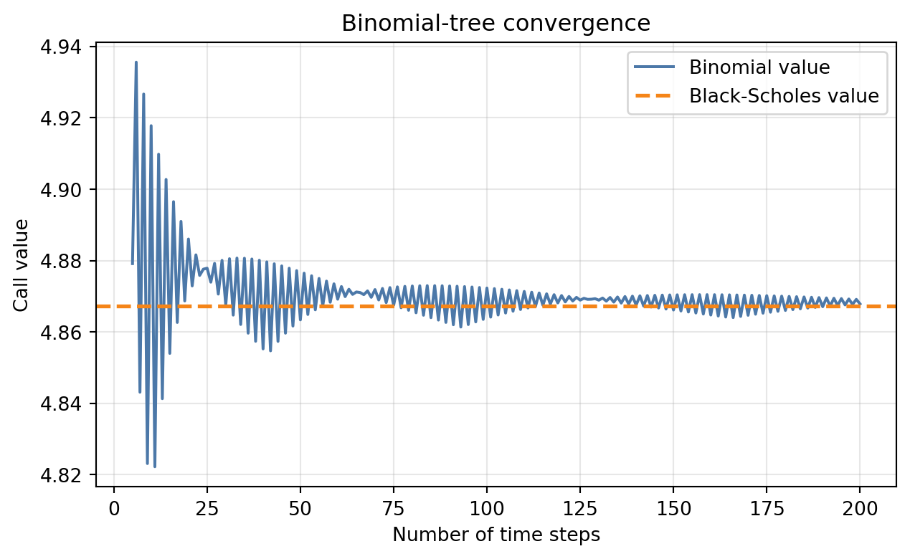
The small saw-tooth pattern is normal. Whether the strike lies near an up or down node changes with the number of steps. The oscillation narrows as the tree becomes finer.
Implied Volatility
The implied volatility is the volatility that makes a model price equal the observed market price. It reverses the usual pricing question:
\[ \text{market price}=\text{model price}(\sigma_{\text{implied}}). \]
Implied volatility is not necessarily a forecast of realized volatility. It also reflects risk premiums, supply and demand, model assumptions, and market liquidity.
NoteExample: Recovering Implied Volatility
Suppose the call from Example 6 trades for 4.25 rather than the 4.8673 value obtained using 10% volatility. The implied volatility solves
\[ 4.25=92N(d_1)-90e^{-0.04(0.5)}N(d_2), \]
where \(d_1\) and \(d_2\) both depend on the unknown \(\sigma\). Because \(\sigma\) cannot be isolated algebraically, use trial values or a numerical root search.
| Trial volatility | Black-Scholes call value | Direction for next trial |
|---|---|---|
| 5.000% | 3.9655 | Price too low; raise \(\sigma\) |
| 6.500% | 4.1878 | Price too low; raise \(\sigma\) |
| 7.000% | 4.2741 | Price too high; lower \(\sigma\) |
| 6.800% | 4.2390 | Price too low; raise \(\sigma\) |
| 6.863% | 4.2500 | Matches the market price |
Therefore,
\[ \boxed{\sigma_{\text{implied}}\approx6.863\%}. \]
The procedure is conceptually simple: if the model price is below the market price, increase volatility; if it is above the market price, decrease volatility. Continue until the pricing error is sufficiently small.
Across strikes, implied volatilities often form a smile or skew rather than a flat line. This is evidence that one constant lognormal volatility does not fully describe market prices.
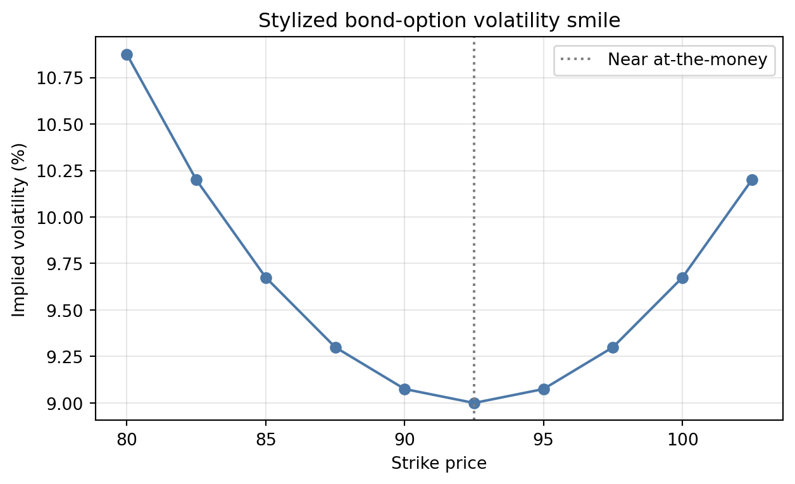
11 Models for Valuing Options on Bond Futures
Black’s futures-option model is widely used as a benchmark for European options on futures. The call and put prices are:
\[ c=e^{-rT}[F_0N(d_1)-KN(d_2)], \]
\[ p=e^{-rT}[KN(-d_2)-F_0N(-d_1)], \]
with
\[ d_1=\frac{\ln(F_0/K)+\frac{1}{2}\sigma^2T}{\sigma\sqrt{T}}, \qquad d_2=d_1-\sigma\sqrt{T}. \]
The futures price replaces the spot price. There is no separate cost-of-carry term in \(d_1\) because the futures price already reflects carry under the model.
NoteExample 7: Option on 10-Year Treasury Futures
Suppose:
- current futures price \(F_0=111\);
- strike \(K=110\);
- time to expiration \(T=0.25\) years;
- risk-free rate \(r=4.5\%\); and
- futures-price volatility \(\sigma=8\%\).
The following calculation gives the call and put in futures price points and then converts them to dollars for a $100,000 contract.
First calculate the volatility over the option’s life:
\[ \sigma\sqrt{T}=0.08\sqrt{0.25}=0.04. \]
Then
\[ \begin{aligned} d_1 &=\frac{\ln(111/110)+\tfrac12(0.08)^2(0.25)}{0.08\sqrt{0.25}}\\ &=0.2462, \end{aligned} \]
\[ d_2=0.2462-0.04=0.2062. \]
The required normal probabilities and discount factor are
\[ N(d_1)=0.5973, \qquad N(d_2)=0.5817, \qquad e^{-rT}=e^{-0.045(0.25)}=0.9888. \]
Call premium:
\[ \begin{aligned} c &=e^{-rT}[F_0N(d_1)-KN(d_2)]\\ &=0.9888[111(0.5973)-110(0.5817)]\\ &=\boxed{2.2823\text{ points}}. \end{aligned} \]
Because one point is $1,000, the dollar premium is
\[ 2.2823\times\$1{,}000=\boxed{\$2{,}282.32}. \]
Put premium: using \(N(-d)=1-N(d)\),
\[ \begin{aligned} p &=e^{-rT}[KN(-d_2)-F_0N(-d_1)]\\ &=0.9888[110(0.4183)-111(0.4027)]\\ &=\boxed{1.2935\text{ points}}\\ &=\boxed{\$1{,}293.50}. \end{aligned} \]
Finally, futures put-call parity provides a useful error check:
\[ c-p=2.2823-1.2935=0.9888, \]
\[ e^{-rT}(F_0-K)=0.9888(111-110)=0.9888. \]
The equality confirms that the call and put calculations are internally consistent.
Model Limitations for Interest-Rate Options
Black’s model is easy to quote and invert, but its lognormal futures-price assumption is not a complete term-structure model. It does not explain how all maturities move together. For path-dependent instruments or portfolios with many cash-flow dates, no-arbitrage short-rate or market models—such as Hull-White—can generate internally consistent future yield curves.
The model must match the question:
- Black/Black-Scholes: transparent benchmark and implied-volatility quoting;
- binomial tree: early exercise and discrete decisions;
- short-rate or term-structure model: future curves, path dependence, and complex fixed-income cash flows.
12 Hedging Long-Term Bonds with Puts on Futures
A long-duration bond portfolio loses value when yields rise. A Treasury futures put gains when the futures price falls. First express the portfolio exposure in futures-equivalent contracts by matching DV01:
\[ N_{\text{fut-eq}} \approx \frac{\text{Portfolio DV01}}{\text{Futures DV01 per contract}}. \]
An option’s delta is the approximate change in the option price for a one-unit change in the underlying futures price, holding the other pricing inputs fixed: \(\Delta=\partial V/\partial F\). A put has negative delta because its value rises when the futures price falls. Since a put normally has \(|\Delta_{\text{put}}|<1\) before expiration, one put supplies only \(|\Delta_{\text{put}}|\) futures-equivalent contracts. The number of actual puts for a current delta hedge is therefore:
\[ N_{\text{puts}} \approx \frac{\text{Portfolio DV01}} {|\Delta_{\text{put}}|\times\text{Futures DV01}}. \]
For example, a put with delta \(-0.40\) supplies only \(0.40\) of a short futures exposure, so hedging 100 futures-equivalent contracts initially requires \(100/0.40=250\) puts. Delta changes with the futures price, time, and volatility, so this contract count must be rebalanced if the objective is to remain delta-neutral. If the bond portfolio and futures respond differently to rates, the DV01 mapping must also include a yield beta or key-rate adjustment.
NoteExample 8: Protective Puts on Treasury Futures
A manager owns $10 million of long-term bonds with modified duration 8.0. Treasury futures are currently at \(F_0=110\), and each contract is worth \(\$1{,}000\) per futures-price point. One futures contract has a DV01 of \(\$80\). A put on the futures has strike \(K=110\), premium \(1.25\) points, and current delta \(-0.40\).
Step 1: Measure the portfolio’s rate exposure. Its DV01 is approximately:
\[ 10{,}000{,}000\times8.0\times0.0001=\$8{,}000. \]
Thus, a one-basis-point rise in yields is expected to reduce the portfolio value by about \(\$8{,}000\). The corresponding futures-equivalent exposure is:
\[ N_{\text{fut-eq}}=\frac{8{,}000}{80}=100\text{ contracts}. \]
Step 2: Adjust the contract count for delta. Because each put supplies only \(0.40\) futures-equivalent contracts at initiation, a current delta hedge requires:
\[ N_{\text{delta hedge}} =\frac{100}{0.40} =250\text{ puts}. \]
This is an initial local hedge: for a small futures-price change today, \(250(-0.40)=-100\) futures-equivalent contracts offset the portfolio’s \(+100\) exposure. Its premium cost is
\[ 250(1.25)(\$1{,}000)=\$312{,}500. \]
The manager could instead buy 100 puts as a one-for-one static protective overlay. That position is not delta-neutral today—its initial option exposure is only \(100(0.40)=40\) short futures equivalents—but each in-the-money put has an expiration payoff slope of \(-1\). Consequently, 100 puts create a simple floor for the 100-contract-equivalent exposure at expiration. The scenario analysis below uses this static 100-put design so that the payoff and the floor can be seen directly. Its premium is:
\[ \text{Premium cost}=100(1.25)(\$1{,}000)=\$125{,}000. \]
Step 3: Map the bond portfolio to the futures price. Under the simplifying assumption that the DV01 match remains valid and basis and convexity effects are ignored, the portfolio behaves like a long position in 100 futures contracts. A move from \(F_0=110\) to \(F_T\) therefore produces the mapped bond change:
\[ \Delta V_{\text{bond,mapped}} =100(\$1{,}000)(F_T-110). \]
The sign now has a clear interpretation: if \(F_T=107\), the futures decline by three points and the mapped bond change is \(100(\$1{,}000)(-3)=-\$300{,}000\).
Step 4: Calculate the option payoff and net change. The 100 puts pay:
\[ \text{Put payoff} =100(\$1{,}000)\max(110-F_T,0). \]
The combined change, measured relative to the initial portfolio value and including the premium paid, is:
\[ \Delta V_{\text{protected}} =\Delta V_{\text{bond,mapped}}+\text{Put payoff}-\$125{,}000. \]
Applying these three components gives:
| \(F_T\) | Mapped bond change | Put payoff | Net change after premium |
|---|---|---|---|
| 104 | -$600,000 | $600,000 | -$125,000 |
| 107 | -$300,000 | $300,000 | -$125,000 |
| 110 | $0 | $0 | -$125,000 |
| 113 | $300,000 | $0 | $175,000 |
| 116 | $600,000 | $0 | $475,000 |
For example, when \(F_T=107\), the mapped bond loses \(\$300{,}000\), the puts pay \(\$300{,}000\), and the manager has paid \(\$125{,}000\) for the insurance:
\[ \begin{aligned} \text{net change} &=100(\$1{,}000)(107-110)\\ &\quad+100(\$1{,}000)(110-107)-\$125{,}000\\ &=-\$125{,}000. \end{aligned} \]
Below the strike, every additional one-point mapped bond loss is offset by an additional one-point put payoff; the net loss is limited to the premium. Above the strike, the puts expire worthless and the manager retains the mapped bond gain less the premium. The exact floor will differ in practice because the bond and futures can have basis, curve, and convexity differences.
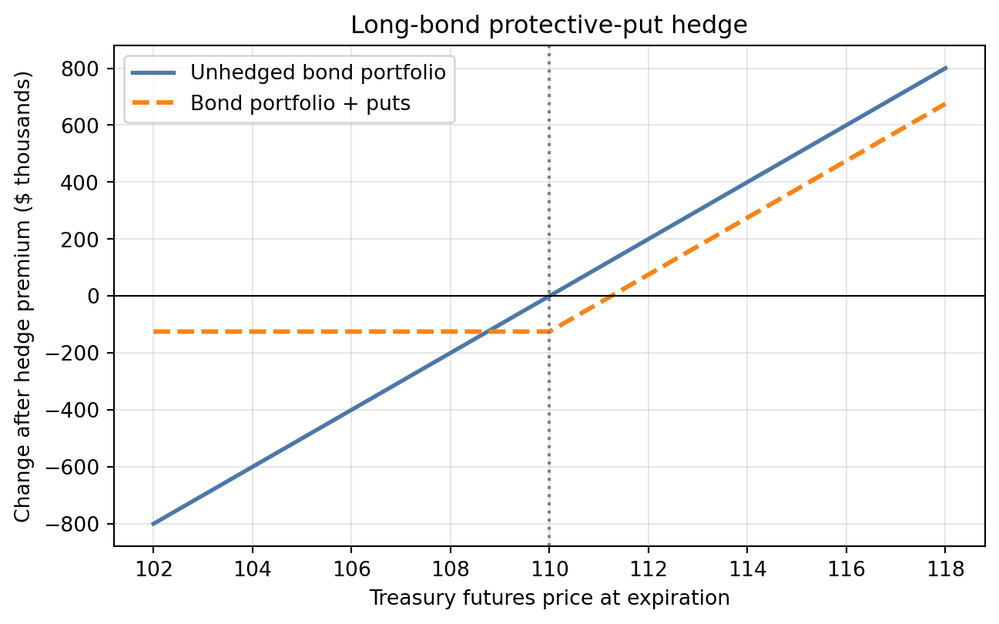
The 250-put delta hedge and the 100-put static overlay should not be confused. The first targets zero sensitivity for a small move today and must be rebalanced as delta changes. The second targets a transparent one-for-one payoff floor at expiration and retains some sensitivity before expiration.
Practical Hedge Risks
- Basis risk: the portfolio and futures contract may respond differently.
- Curve risk: one futures contract cannot hedge every maturity point.
- Delta drift: option sensitivity changes through time and across price states.
- Volatility risk: the put can change value even without a rate move.
- Expiration mismatch: the hedge may expire before the portfolio risk ends.
- Liquidity and transaction costs: rolling and rebalancing are not free.
13 Covered Call Writing with Futures Options
A covered call combines a long underlying exposure with short calls on that exposure. For a bond manager, the long bond portfolio is first translated into futures-equivalent contracts using DV01. The manager then chooses whether to match the current option delta or to overwrite the exposure one-for-one for its expiration payoff.
The manager receives option premium and gives up gains beyond the call strike. The strategy is attractive when the manager expects rates and prices to remain in a range, but it is not downside insurance.
For one futures-equivalent unit and one short call, the simplified expiration change in futures-price points is:
\[ \Pi_{\text{covered call}} =(F_T-F_0)+c-\max(F_T-K,0). \]
Below the strike, the call expires worthless and the premium cushions losses only by a fixed amount. Above the strike, the short call offsets further gains.
NoteExample 9: Covered Calls on a Mapped Bond Exposure
Continue with the same \(\$10\) million bond portfolio. Its \(\$8{,}000\) DV01 and the \(\$80\) futures DV01 imply a long exposure of 100 futures-equivalent contracts. The current futures price is \(F_0=110\). A call has strike \(K=113\), premium \(c=1.00\) point, current delta \(+0.40\), and a \(\$1{,}000\) value per futures-price point.
Step 1: Compare delta-neutral and static contract counts. Because the manager is short the calls, their delta contribution is negative. Neutralizing the portfolio’s current \(+100\) futures-equivalent exposure would require:
\[ N_{\text{delta hedge}} =\frac{100}{0.40} =250\text{ short calls}. \]
The initial net delta would be \(100-250(0.40)=0\). This aggressive overwrite must be rebalanced as call delta changes and can become overhedged if the futures price rises and the call delta approaches one.
For a standard one-for-one covered-call overlay, the manager instead sells 100 calls against the 100 futures-equivalent units. This does not eliminate current delta: the initial net exposure is \(100-100(0.40)=60\) long futures equivalents. However, at expiration above the strike, each call’s payoff slope is \(+1\) to its holder and therefore \(-1\) to the writer. The 100 short calls then offset the gains on the 100-unit mapped bond exposure. The calculations below use this 100-call static overlay.
Step 2: Calculate the premium income. Selling 100 calls produces:
\[ 100\times1.00\times\$1{,}000=\$100{,}000. \]
Step 3: Write each component of the expiration result. The mapped bond change is the same 100-contract-equivalent mapping used in the protective-put example:
\[ \Delta V_{\text{bond,mapped}} =100(\$1{,}000)(F_T-110). \]
The call holder receives \(\max(F_T-113,0)\) points. The manager wrote the calls, so the intrinsic value is a loss, while the premium received is a gain. The short-call profit is therefore:
\[ \Pi_{\text{short calls}} =100(\$1{,}000)[1-\max(F_T-113,0)]. \]
The covered-call net change is:
\[ \Delta V_{\text{covered call}} =\Delta V_{\text{bond,mapped}}+\Pi_{\text{short calls}}. \]
The resulting scenarios are:
| \(F_T\) | Mapped bond change | Short-call profit | Covered-call net change |
|---|---|---|---|
| 104 | -$600,000 | $100,000 | -$500,000 |
| 107 | -$300,000 | $100,000 | -$200,000 |
| 110 | $0 | $100,000 | $100,000 |
| 113 | $300,000 | $100,000 | $400,000 |
| 116 | $600,000 | -$200,000 | $400,000 |
| 119 | $900,000 | -$500,000 | $400,000 |
At \(F_T=107\), the calls expire worthless. The \(\$100{,}000\) premium cushions—but does not eliminate—the mapped \(\$300{,}000\) bond loss, leaving a \(\$200{,}000\) net loss.
At \(F_T=119\), the mapped bond exposure gains \(\$900{,}000\). The calls finish six points in the money, so the writer pays \(\$600{,}000\) of intrinsic value but keeps the \(\$100{,}000\) premium:
\[ \text{short-call profit} =100(\$1{,}000)[1-(119-113)] =-\$500{,}000. \]
The combined gain is therefore \(\$900{,}000-\$500{,}000=\$400{,}000\). More generally, once \(F_T>113\), the mapped bond gains one dollar per incremental futures move while the written calls lose one dollar. The maximum net gain is consequently:
\[ 100(\$1{,}000)[(113-110)+1]=\$400{,}000. \]
Below the strike, the premium provides only a fixed \(\$100{,}000\) cushion; it does not create a floor. Above the strike, the strategy gives up further mapped gains. As with the put example, actual results can differ because the bond portfolio is not the futures contract and the DV01 mapping can change.
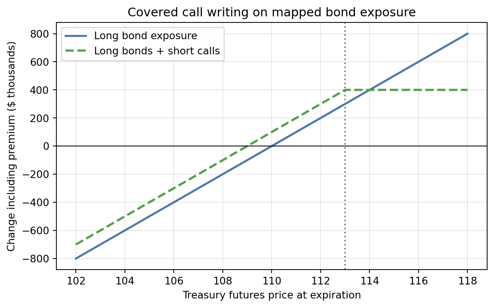
Protective Put Versus Covered Call
| Strategy | Premium cash flow | Downside | Upside | Typical objective |
|---|---|---|---|---|
| Long bond + long put | Pay premium | Floored below strike, subject to basis risk | Retained | Insurance |
| Long bond + short call | Receive premium | Only slightly cushioned | Capped above strike | Income enhancement |
The protective put buys convexity. The covered call sells convexity. Neither is automatically superior; the correct choice depends on the manager’s objective, constraints, valuation view, and tolerance for tail outcomes.
14 A Complete Decision Framework
Before using an interest-rate option, ask five questions:
- What is the underlying risk? A parallel rate move, a curve point, volatility, or an event date?
- What payoff shape is desired? Lock, floor, cap, or premium income?
- Which contract best matches the risk? Cash-bond option, futures option, cap, floor, or swaption?
- How many contracts are needed? Use DV01, key-rate duration, beta, and option delta rather than notional value alone.
- What can break the hedge? Basis, volatility, time decay, exercise, liquidity, margin, and model risk.
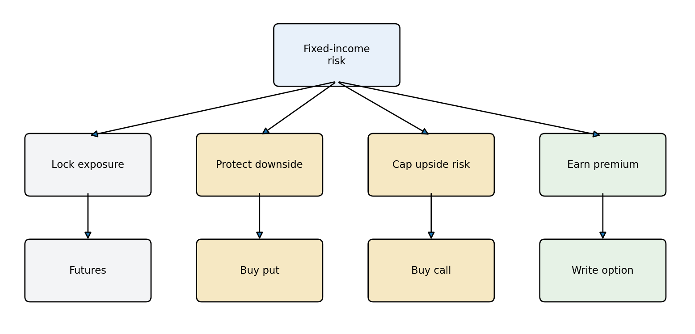
Check Your Understanding
- A manager expects the 10-year yield to rise sharply. Should the manager buy a call or a put on 10-year Treasury futures? Explain both links in the chain.
- A 110 put costs 0-32. What is its dollar premium? At what futures price does it break even at expiration, ignoring fees?
- Why is the risk-neutral probability in a binomial tree not necessarily the market’s forecast probability?
- A put hedge has delta \(-0.25\). Why might dividing portfolio DV01 only by futures DV01 materially understate the number of puts required initially?
- Does a market-implied volatility prove that traders expect exactly that realized volatility? Why or why not?
NoteAnswers
- Buy a put: rising yields usually lower Treasury prices, and a put benefits when the futures price falls.
- \(0\text{-}32=32/64=0.5\) point, or $500. Break-even is \(110-0.5=109.5\), quoted as 109-32.
- It enforces no-arbitrage pricing and a risk-free expected return; it is not estimated from real-world frequencies.
- Each put initially supplies only 0.25 of one futures contract’s price sensitivity, so roughly four puts are needed for one futures-equivalent unit before other adjustments.
- No. Implied volatility is a model-consistent price quote that also reflects risk premiums, supply and demand, liquidity, and model limitations.
Key Points
- An option buyer has a right; an option writer has a contingent obligation.
- Calls benefit from higher underlying prices, while puts benefit from lower underlying prices.
- Futures create symmetric linear exposure; options create asymmetric exposure in exchange for a premium.
- Exercising a futures call creates a long futures position at the strike; exercising a futures put creates a short futures position at the strike.
- Treasury and SOFR futures options are important exchange-traded interest-rate options with standardized clearing and American-style exercise.
- Intrinsic value is the value of immediate exercise. Time value is the premium above intrinsic value.
- Long-option losses are limited to premium. Naked short-option profits are limited to premium while losses can be much larger.
- Put-call parity links calls, puts, the underlying, and the present value of the strike through no-arbitrage.
- Call value generally rises with the underlying price, time, and volatility and falls with the strike and interim coupon value.
- Black-Scholes provides a transparent benchmark for European bond options, but its constant-volatility and lognormal assumptions are approximations.
- A binomial model prices by backward induction and can incorporate early exercise.
- Implied volatility is the model volatility consistent with an observed market price; it is not automatically a forecast of realized volatility.
- Black’s model uses the futures price to value European options on bond futures.
- Protective puts establish a floor while retaining upside, at the cost of premium.
- Covered calls earn premium but cap gains and provide only limited downside cushion.
- Effective hedges use DV01, delta, curve exposure, and basis relationships—not notional value alone.
Suggested Readings
- Fabozzi, Bond Markets: Analysis and Strategies, chapters on interest-rate options.
- CME Group, Fundamentals of Options on Futures.
- CME Group, Trading SOFR Options.
- CME Group, Primer on Margining Styles for Options.